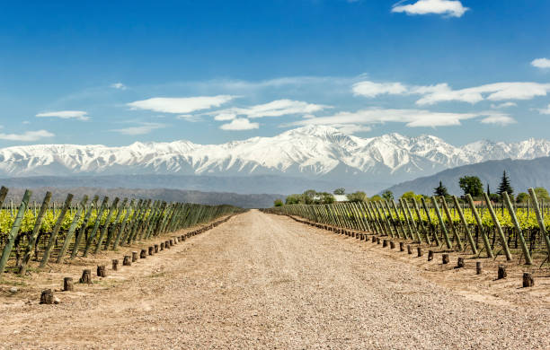

Mendoza
Mendoza is a city in the Cuyo region of Argentina and is the heart of the Argentine wine country, famous for its Malbecs and other red wines. Its various wineries offer tastings and guided tours. The city has wide, tree-lined streets surrounded by modern and art deco buildings, and smaller squares that surround Independence Square, the site of the underground Municipal Museum of Modern Art, which displays modern and contemporary art.
